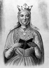

Orta Çağ’ın en güçlü kadınlarından biri olan Aquitaineli Eleanor (1122-1204) hem İngiltere’nin hem de Fransa’nın kraliçesi olmuş, her iki ülkenin tarihinde de önemli bir yer tutmuştur. Haçlı seferlerinden birinde önemli bir rol oynamıştır. İki kral annesidir. İngiltere’yi 300 yıl boyunca yönetecek olan Plantagenet Hanedanı’nın kuruluşuna katkıda bulunmuştur.

Eleanor, toprakları güneybatı Fransa sahilinde olan Aquitaine Dükü’nün tek varisiydi. 1137 yılında henüz on beş yaşındayken tahta geçti. Avrupa’nın en beğenilen prensesiydi. Üç ay sonra Fransa Prensi Louis (1120-1180) ile evlendi.
Kocası 7. Louis kral olunca, Eleanor da Fransa Kraliçesi oldu. Ancak Aquitaine’deki varlıklarını hâlâ elinde tutuyor, onları ayrıca yönetiyordu. Çiftin iki kızı oldu. 1147 yılında başarısız olan 2. Haçlı Seferi’ne katıldılar. Eleanor, Aquitaine ordusunun yanında yürüyerek saray efradını hayrete düşürdü.
Haçlı Seferi’nden döndükten sonra Louis’le olan evliliğinde sorun yaşamaya başladı. 1152 yılında evlilik akitlerini bozdular. Altı hafta sonra Eleanor, gelecekte İngiltere kralı olacak olan 2. Hennry (1133-1189) ile evlendi.
Bu birliktelik Eleanor’un ilk evliliğinden daha mutlu geçecekti. Ne var ki 1174 yılında Henry, karısını kendisine karşı başarısız bir isyan organize ettiği gerekçesiyle tutuklattı. İkisi geleceğin İngiltere kralları olacak olan sekiz çocukları oldu: Aslan Yürekli Richard (1157-1199) ve John (1167-1216).
Richard, 1189 yılında kral olunca annesini hapisten çıkardı. Richard 3. Haçlı Seferi’ndeyken annesi ülkenin yönetiminde etkin oldu. O sıralarda 60’lı yaşlarında olan Eleanor, sefere katılmasa da seferin düzenlenmesine katkı sundu. Richard’ın 1192 yılında bir Alman dükü tarafından esir alınmasından sonra onun kurtulması için gerekli paranın toplanmasına gayret gösterdi.
Richard’ın ölümünden sonra Eleanor’un en küçük oğlu John kral oldu. İkisi hariç bütün çocuklarından daha uzun yaşayan Eleanor beş yıl sonra öldü.
Ek Bilgiler
1- Shakespeare’in tarihsel oyunu “King John”da (Kral John) Eleanor, “Kraliçe Elinor” karakteri tarafından temsil edilir.
2- Eleanor, doğurduğu on çocuğun soyundan gelen pek çok ünlünün atasıdır. Oyuncu Audrey Hepburn (1929–1993), çizgi filmci Walt Disney (1901–1966) ve kraliçenin 24. büyük torunu olan ABD eski başkanı George W. Bush (1946–), soyundan gelen ünlülerin sadece birkaçıdır.
3- Eleanor ve Henry, James Goldman’ın (1927-1998) 1996 tarihli “The Lion in the Winter” (Kış Ortasında Bir Aslan) oyununun temel karakterleridir. Oyun 1968 yılında beyaz perdeye aktarılmıştır. Aktrist Katharine Hepburn (1907–2003), Eleanor’u canlandırdığı filmdeki rolüyle Oscar kazanmıştır.